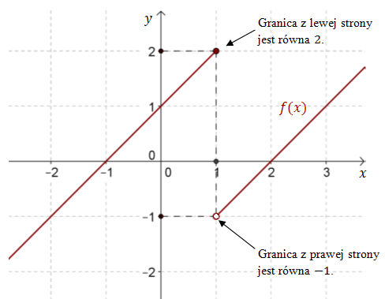
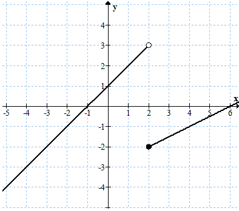
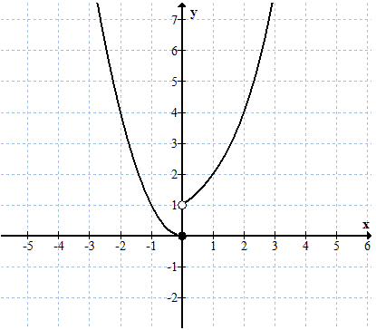
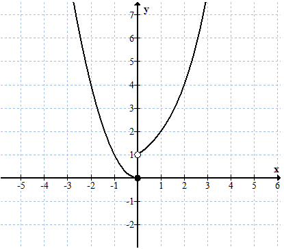
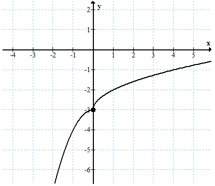
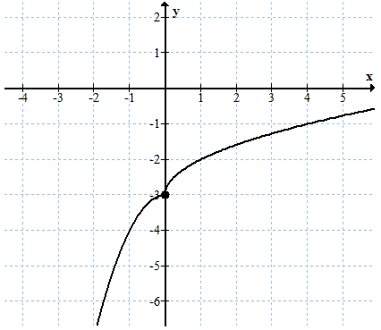
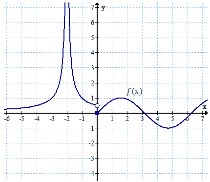

Granica funkcji w punkcie
Czasami musimy ustalić do jakiej wartości dąży funkcja \(f(x)\), wraz z tym jak
\(x\) dąży do liczby \(x_0\).
Szukana wartość jest granicą funkcji \(f(x)\) w punkcie \(x_0\).
Szukana wartość jest granicą funkcji \(f(x)\) w punkcie \(x_0\).
Jeśli funkcja \(f(x)\) w punkcie \(x_0\) ma granicę \(g\), to piszemy \[\lim_{x \to
x_0} f(x)=g\] Skrót \(\lim\) pochodzi od łacińskiego słowa limes - granica.
Inny, rzadziej spotykany sposób zapisu, to: \(f(x)\xrightarrow[x\rightarrow x_0]{} g\).
Inny, rzadziej spotykany sposób zapisu, to: \(f(x)\xrightarrow[x\rightarrow x_0]{} g\).
Definicja granicy funkcji w punkcie (Heinego)
Funkcja \(f(x)\) ma granicę \(g\) w punkcie \(x_0\), jeśli dla każdego ciągu \((x_n)\) zbieżnego do \(x_0\), ciąg \((f(x_n))\) jest zbieżny do \(g\).Zapis matematyczny: \[\lim_{x \to x_0}f(x)=g\Leftrightarrow \underset{x_n\rightarrow x_0}{\forall }\lim_{x_n \to x_0}f(x_n)=g \]

Ilustracja graficzna definicji Heinego granicy funkcji w punkcie.
Inne
sformułowanie definicji Heinego:Jeśli dla dowolnego ciągu \((x_n)\) zbieżnego do \(x_0\) (zarówno z lewej jak i z prawej strony), wartości \((f(x_n))\) zbiegają do liczby \(g\), to \(g\) jest granicą funkcji \(f(x)\) w punkcie \(x_0\).
Twierdzenie
Jeśli funkcja \(f(x)\) jest ciągła w punkcie \(x_0\), to ma w tym punkcie granicę równą \(f(x_0)\). Liczenie granic funkcji w punktach ciągłości jest bardzo łatwe. Zgodnie z
powyższym twierdzeniem granica funkcji w punkcie ciągłości jest równa wartości funkcji w tym
punkcie.
Oblicz granicę funkcji \(f(x)=x^2-3\) w punkcie \(x_0=2\).
Funkcja \(f(x)=x^2-3\) jest ciągła w punkcie \(x_0=2\), zatem: \[\lim_{x \to 2}
f(x)=f(2)=2^2-3=1\]
Oblicz granicę funkcji \(f(x)=\frac{1}{x}\) w punkcie \(x_0=3\).
Funkcja \(f(x)=\frac{1}{x}\) jest ciągła w punkcie
\(x_0=3\), zatem: \[\lim_{x \to 3} f(x)=f(3)=\frac{1}{3}\]
Granicę funkcji badamy zazwyczaj w punktach nieciągłości - tam gdzie funkcja nie
przyjmuje żadnej wartości. W punktach nieciągłości granica może nie istnieć.
Zbadaj granicę funkcji \(f(x)=\begin{cases} x+1\quad
\text{dla } x\le 1\\ x-2\quad \text{dla } x\gt 1 \end{cases} \) w punkcie \(x_0=1\).
Narysujmy wykres funkcji \(f(x)\). 
Widzimy, że dla argumentu \(x_0=1\) funkcja jest nieciągła.
Jeżeli zbliżamy się z argumentami \(x\) do \(x_0=1\) z lewej strony, to wartości funkcji dążą do \(2\). Jeśli natomiast zbliżamy się z argumentami \(x\) do \(x_0=1\) z prawej strony, to wartości funkcji dążą do \(-1\). Zatem w punkcie \(x_0=1\) funkcja \(f(x)\) nie ma granicy.
Jeżeli zbliżamy się z argumentami \(x\) do \(x_0=1\) z lewej strony, to wartości funkcji dążą do \(2\). Jeśli natomiast zbliżamy się z argumentami \(x\) do \(x_0=1\) z prawej strony, to wartości funkcji dążą do \(-1\). Zatem w punkcie \(x_0=1\) funkcja \(f(x)\) nie ma granicy.
Funkcja \(f(x)\) ma w punkcie \(x_0=1\) granicę lewostronną i
prawostronną.
Granica lewostronna jest równa \(2\) i zapisujemy to w taki sposób: \[\lim_{x \to 1^{-}}f(x)=2 \] Granica prawostronna jest równa \(-1\) i zapisujemy to w taki sposób: \[\lim_{x \to 1^{+}}f(x)=-1 \] Granica lewostronna i prawostronna są różne, zatem funkcja \(f(x)\) nie ma granicy w punkcie \(x_0=1\).
Granica lewostronna jest równa \(2\) i zapisujemy to w taki sposób: \[\lim_{x \to 1^{-}}f(x)=2 \] Granica prawostronna jest równa \(-1\) i zapisujemy to w taki sposób: \[\lim_{x \to 1^{+}}f(x)=-1 \] Granica lewostronna i prawostronna są różne, zatem funkcja \(f(x)\) nie ma granicy w punkcie \(x_0=1\).
W powyższym przykładzie pojawiło się pojęcie granicy lewostronnej i
prawostronnej. Teraz podamy ich formalne definicje.
Definicja granicy lewostronnej
Liczbę \(g\) nazywamy granicą lewostronną funkcji \(f(x)\) w punkcie
\(x_0\), jeśli dla każdego ciągu \((x_n)\) zbieżnego do \(x_0\) z lewej strony (tzn. takiego, że
\(\underset{n\in \mathbb{N} }{\forall }\ x_n\lt x_0\)), ciąg
\((f(x_n))\) jest zbieżny do \(g\).
Jeśli granica lewostronna funkcji \(f(x)\) w punkcie \(x_0\) jest równa \(g\),
to zapiszemy: \[\lim_{x \to {x_0}^{-}}f(x)=g \]
Definicja granicy prawostronnej
Liczbę \(g\) nazywamy granicą prawostronną funkcji \(f(x)\) w punkcie
\(x_0\), jeśli dla każdego ciągu \((x_n)\) zbieżnego do \(x_0\) z prawej strony (tzn. takiego,
że \(\underset{n\in \mathbb{N} }{\forall }\ x_n\gt x_0\)), ciąg
\((f(x_n))\) jest zbieżny do \(g\).
Jeśli granica prawostronna funkcji \(f(x)\) w punkcie \(x_0\) jest równa \(g\),
to zapiszemy: \[\lim_{x \to {x_0}^{+}}f(x)=g \]
Warunek koniczny i wystarczający istnienia granicy w punkcie
Funkcja \(f(x)\) ma granicę \(g\) w punkcie \(x_0\), jeśli granica lewostronna i prawostronna w tym punkcie jest równa \(g\): \[\text{jeśli}\quad \lim_{x \to {x_0}^{-}}f(x)= \lim_{x \to {x_0}^{+}}f(x)=g\quad \text{to}\quad \lim_{x \to x_0}f(x)=g\]Zbadaj granicę funkcji \(f(x)=\begin{cases} x+1\quad
\text{dla } x\lt 2\\ \frac{1}{2}x-3 \quad \text{dla } x\ge 2 \end{cases} \) w punkcie
\(x = 2\).
Dla ułatwienia rysujemy wykres funkcji \(f(x)\):  Granica w
punkcie \(x = 2\) nie istnieje, ponieważ granice lewostronna i prawostronna przyjmują różne
wartości: \[\begin{split} &\lim_{x \to 2^{-}}f(x)=3\\[6pt] &\lim_{x \to 2^{+}}f(x)=-2
\end{split}\]
Zbadaj granicę funkcji \(f(x)=\begin{cases} x^2\quad
\text{dla } x\le 0\\ 2^x\quad \text{dla } x\gt 0 \end{cases} \) w punkcie \(x = 0\).
Dla ułatwienia szkicujemy wykres podanej funkcji:
 Granica w punkcie \(x = 0\) nie istnieje, ponieważ granica lewostronna jest różna od prawostronnej: \[\begin{split} &\lim_{x \to 0^{-}}f(x)=0\\[6pt] &\lim_{x \to 0^{+}}f(x)=1 \end{split}\]
 Granica w punkcie \(x = 0\) nie istnieje, ponieważ granica lewostronna jest różna od prawostronnej: \[\begin{split} &\lim_{x \to 0^{-}}f(x)=0\\[6pt] &\lim_{x \to 0^{+}}f(x)=1 \end{split}\]
Zbadaj granicę funkcji \(f(x)=\begin{cases} -x^2-3\quad
\text{dla } x\le 0\\ \sqrt{x}-3 \quad \text{dla } x\gt 0 \end{cases} \) w punkcie \(x
= 0\).
Dla ułatwienia szkicujemy wykres podanej funkcji:
 Granica w punkcie \(x = 0\) istnieje, ponieważ granica lewostronna w tym punkcie jest równa prawostronnej: \[\begin{split} &\lim_{x \to 0^{-}}f(x)=-3\\[6pt] &\lim_{x \to 0^{+}}f(x)=-3 \end{split}\] Można zatem krótko napisać: \[\lim_{x \to 0}f(x)=-3\]
 Granica w punkcie \(x = 0\) istnieje, ponieważ granica lewostronna w tym punkcie jest równa prawostronnej: \[\begin{split} &\lim_{x \to 0^{-}}f(x)=-3\\[6pt] &\lim_{x \to 0^{+}}f(x)=-3 \end{split}\] Można zatem krótko napisać: \[\lim_{x \to 0}f(x)=-3\]
Granicę funkcji można również liczyć w \(+\infty\) oraz \(-\infty\). (tzn. przy
\(x\)-ch dążących do \(+\infty\) lub \(-\infty\)). Zapisujemy to w następujący sposób: \[\lim_{x \to
+\infty }f(x)\quad \text{oraz}\quad \lim_{x \to -\infty }f(x) \]
Dana jest funkcja: \[f(x)=\begin{cases} \left |\frac{1}{x+2} \right |\quad
\text{dla } x\lt 0\\ \sin x \quad \text{dla } x\ge 0 \end{cases} \] Oblicz granicę tej funkcji w
punktach \(x_1 = -2\), \(x_2 = 0\), \(x_3 = \pi\) oraz w \(+\infty\) i \(-\infty\).
Zacznijmy od naszkicowania wykresu tej funkcji:  W punkcie \(x_1
= -2\) funkcja nie jest określona, zatem badamy granicę lewostronną i prawostronną:
\[\begin{split} &\lim_{x \to -2^{-}}f(x)=+\infty \\[6pt] &\lim_{x \to -2^{+}}f(x)=+\infty
\end{split}\] Obie granice są równe, zatem: \[\lim_{x \to -2}f(x)=+\infty \] W punkcie \(x_2 =
0\) funkcja jest nieciągła, zatem liczymy granicę lewostronną i prawostronną: \[\begin{split}
&\lim_{x \to 0^{-}}f(x)=\frac{1}{2} \\[6pt] &\lim_{x \to 0^{+}}f(x)=0 \end{split}\] Granica
lewostronna jest różna od prawostronnej zatem granica w punkcie \(x_2\) nie istnieje. W punkcie
\(x_3 = \pi\) funkcja jest określona i ciągła, zatem liczymy granicę wprost ze wzoru: \[\lim_{x
\to \pi }f(x)=f(\pi )=\sin \pi =0 \] W \(-\infty\) funkcja dąży do osi \(x\)-ów, zatem:
\[\lim_{x \to -\infty }f(x)=0 \] W \(+\infty\) funkcja nie ma granicy, ponieważ \(\sin x\) jest
funkcją okresową i nie dąży do żadnej konkretnej wartości (tylko waha się w przedziale \((-1,
1)\)).